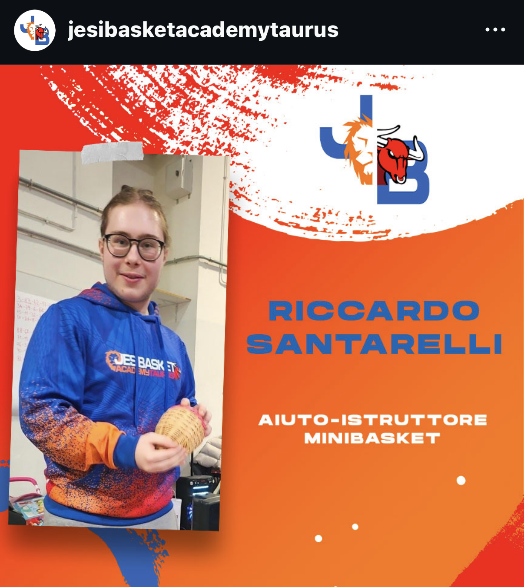
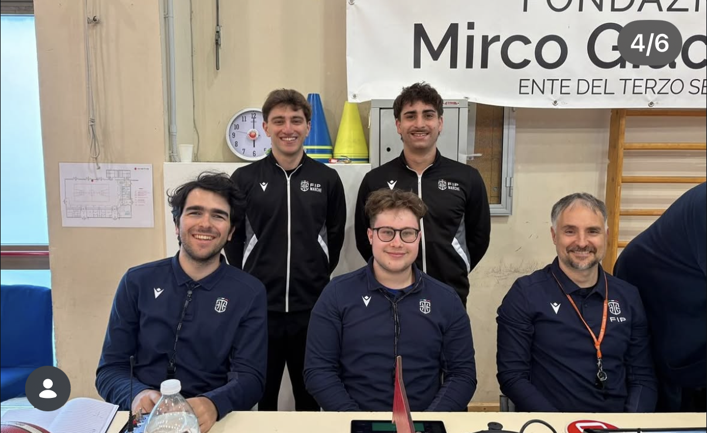

Hobby & Passioni
Da quando ho iniziato a giocare a pallacanestro, questo sport è diventato una parte fondamentale della mia vita, offrendomi non solo un modo per mantenere la forma fisica, ma anche l'opportunità di sviluppare valori come il lavoro di squadra e il rispetto per gli avversari.
Iniziai a giocare a pallacanestro quando avevo 7 anni per la storica società jesina Aurora Basket. Inizialmente odiai questo sport a causa di un allenatore che con i bambini di quella età non si sapeva comportare a dovere. Per un periodo cercai nuovi sport da provare e li provai di tutti, tra cui nuoto, calcio, tennis, baseball e padel ma nessuno di questi mi conquistò. Dopo circa 2 anni, un mio compagno di classe mi convinse di riprovare la pallacanestro in questa nuova società, ovvero la Taurus Basket Jesi, insieme a lui e da lì non mi schiodai più dalla pallacanestro.
Da allora, la pallacanestro è diventata una parte fondamentale della mia vita, offrendomi non solo un modo per mantenere la forma fisica, ma anche l'opportunità di conoscere nuove persone e di sviluppare valori come il lavoro di squadra e il rispetto per gli avversari. Nel corso degli anni, ho partecipato a numerosi tornei e campionati, vivendo momenti di grande gioia e qualche delusione, ma sempre con la consapevolezza che ogni esperienza mi ha aiutato a crescere sia come giocatore che come persona. Divenni anche uno dei migliori difensori del campionato quando avevo 12/13 anni.

Quando arrivai in categoria under 19, mi si iniziò a spegnere la fiamma da giocatore perchè scoprii che necessitavo di un cambiamento nella vita. Mi resi conto che il mio obiettivo non era più quello di diventare un giocatore professionista, ma di rimanere comunque in questo mondo che tanto amavo e che mi aveva dato tanto. Così, grazie alla mia passione per l'insegnamento e alla voglia di trasmettere ciò che avevo imparato, decisi di diventare un allenatore di minibasket, iniziando a lavorare con i più piccoli e a condividere con loro la mia passione per questo sport.
Allenare è un'esperienza incredibilmente gratificante, poiché ho avuto l'opportunità di vedere la loro crescita dei miei allievi non solo come giocatori, ma anche come individui. Attraverso il gioco, ho cercato di insegnare loro l'importanza del lavoro di squadra, della disciplina e del divertimento, sperando di ispirarli a sviluppare una passione per la pallacanestro che possa accompagnarli per tutta la vita. Essere allenatore mi ha permesso di rimanere all'interno del mondo della pallacanestro in maniera attiva e continua tutt'ora a crescere il mio senso di leadership e di lavorare con persone di tutte le età, imparando a comunicare in modo efficace e a motivare i miei giocatori a dare il massimo in ogni allenamento e partita.
Nel 2023, ho deciso di intraprendere un nuovo percorso all'interno del mondo della pallacanestro diventando un arbitro FIP (Federazione Italiana Pallacanestro). Questa nuova esperienza mi ha permesso di vedere il gioco da una prospettiva completamente diversa, imparando a prendere decisioni rapide e imparziali durante le partite, e a comprendere ancora di più le regole e le dinamiche del gioco.
Essere un arbitro mi ha dato l'opportunità di rimanere coinvolto nella pallacanestro in modo più attivo, continuando a crescere e a imparare in questo sport che tanto amo, e mi ha permesso di sviluppare ulteriormente le mie capacità di leadership, comunicazione e gestione delle situazioni di gioco, contribuendo a garantire un ambiente di gioco sicuro e divertente per tutti i partecipanti.
